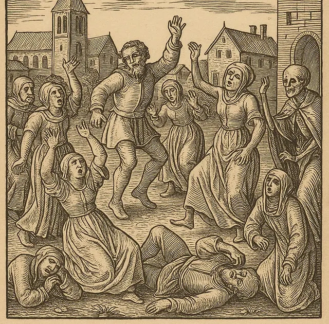

The Dancing Plague
The First Steps: In July 1518, in the city of Strasbourg (then part of the Holy Roman Empire), a woman named Frau Troffea stepped into a narrow street and began to dance fervently. There was no music playing, and she showed no signs of stopping. She danced continuously for hours until she collapsed from exhaustion, only to resume her frantic movements upon waking. What began as a solitary, inexplicable compulsion soon became contagious. Within a week, over thirty people had joined her in the streets. Within a month, the epidemic had consumed an estimated 400 citizens, who leaped, writhed, and convulsed in the sweltering summer heat without rest.

A Fatal Compulsion: Local authorities and physicians were entirely baffled. Drawing on medieval medical theories, they concluded the affliction was caused by "hot blood" and bizarrely decided that the only cure was to let the dancers shake it out of their systems. Civic leaders cleared market spaces, built wooden stages, and even hired professional musicians and strongmen to keep the afflicted moving. This disastrous intervention only fueled the mania, drawing more people into the frenzy. The dancers pushed their bodies far beyond normal human limits. Drenched in sweat and bleeding from their feet, many collapsed in agony. Historical chronicles report that dozens ultimately died from heart attacks, strokes, and sheer physical exhaustion.
Key Facts
Date: July – September 1518
Location: Strasbourg, Alsace (then Holy Roman Empire, modern-day France)
Casualties: Hundreds afflicted; an unknown but historically noted number of deaths resulting directly from exhaustion, strokes, and heart failure.
Cause: Undetermined (Widely accepted by modern experts as a stress-induced mass psychogenic illness, with ergot fungus poisoning as a secondary theory).
Lesson: The Dancing Plague of 1518 remains one of the most bizarre and heavily documented psychological events in human history. It serves as a chilling testament to the profound and sometimes fatal connection between extreme psychological stress and physical behavior. Modern historians and medical experts primarily attribute the event to mass psychogenic illness (mass hysteria), a psychological break triggered by the immense, unrelenting stress of local famines, rampant disease, and overwhelming religious dread prevalent in Strasbourg at the time. Another prominent theory suggests ergot poisoning—consuming bread made from rye infected with a psychoactive fungus chemically related to LSD—though this remains debated, as ergotism typically restricts blood flow and would make sustained, vigorous dancing nearly impossible.